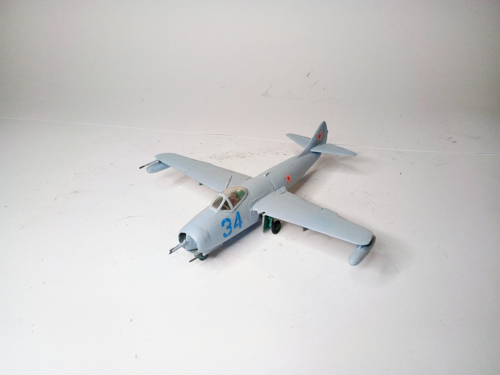
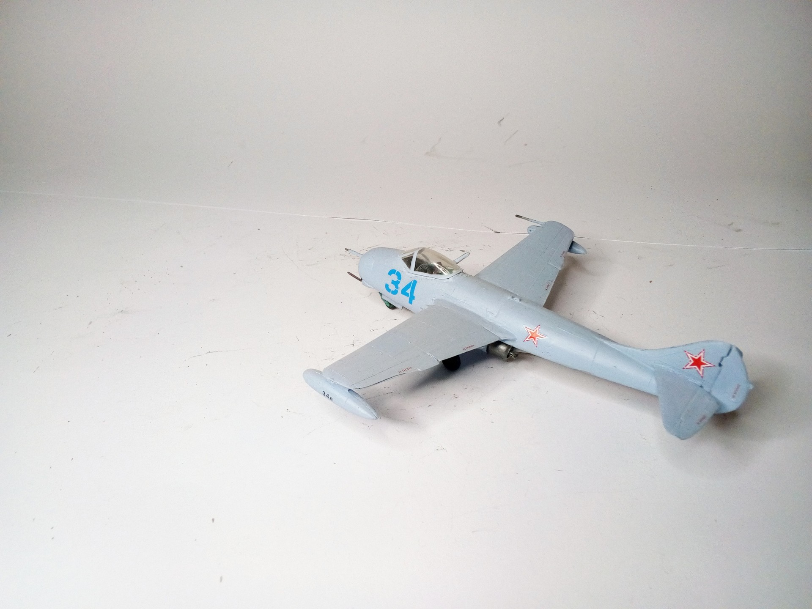

Aerei · scale model archive
Mig 9
Mig 9 — Kit: MPM, Scale: 1/72. Moscow 1946 Gun gas ingestion swas obviously not an issue for the designer #1/72 #MOM

Photo gallery

English description
Moscow 1946
Gun gas ingestion swas obviously not an issue for the designer
#1/72 #MOM
Descrizione italiana
Mosca, 1946.
L’ingestione dei gas dei cannoni evidentemente non fu considerata un problema dal progettista.